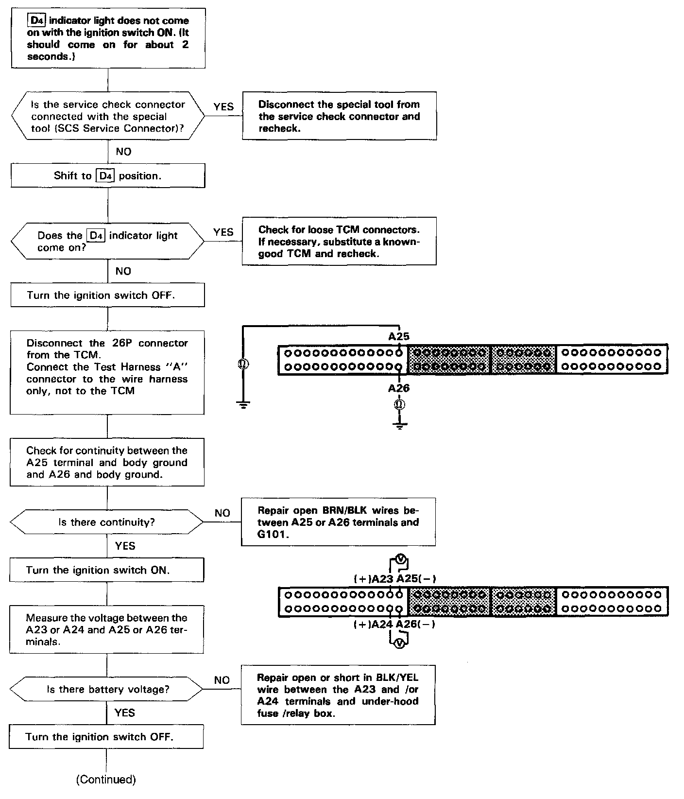
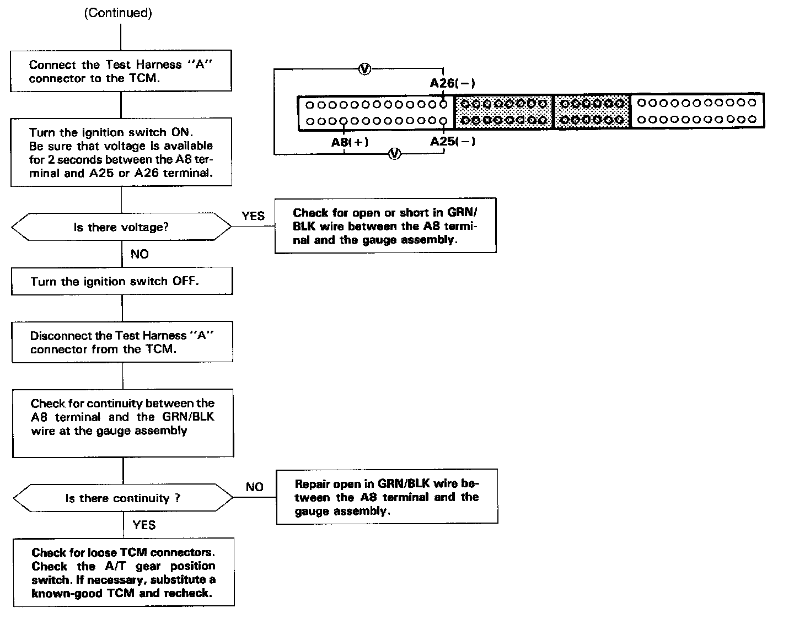

Operation CHARM
: Car repair manuals for everyone.
Home
>>
Acura
>>
1995
>>
Integra (RS, LS) L4-1834cc 1.8L DOHC PFI
>>
Repair and Diagnosis
>>
Transmission and Drivetrain
>>
Lamps and Indicators - Transmission and Drivetrain
>>
Lamps and Indicators - A/T
>>
Malfunction Indicator Lamp - A/T
>>
Testing and Inspection
>>
[D4] Indicator Light Does Not Come On - Ignition Switch On
[D4] Indicator Light Does Not Come On - Ignition Switch On

